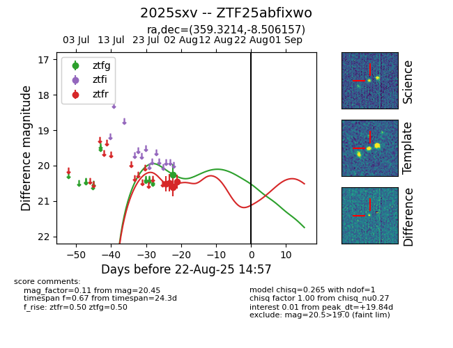

Target 2025sxv at 2025-08-22 14:57, see:
FINK: fink-portal.org/ZTF25abfixwo
Lasair: lasair-ztf.lsst.ac.uk/objects/ZTF25abfixwo
ALeRCE: alerce.online/object/ZTF25abfixwo
TNS: wis-tns.org/object/2025sxv
YSE: ziggy.ucolick.org/yse/transient_detail/2025sxv
alt names
ZTF25abfixwo (ztf,alerce)
2025sxv (tns,yse)
coordinates:
equatorial (ra, dec) = (359.3214,-8.50616)
galactic (l, b) = (85.8927,-67.39680)
photometry
last ztfg=20.25, ztfr=20.45
1 ztfg, 5 ztfr detections
